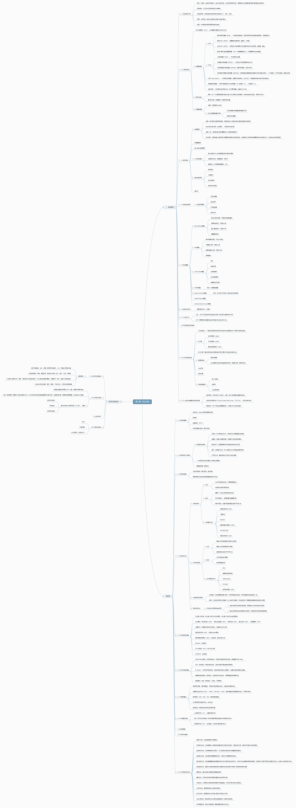

CISSP（三）
BCP业务连续性计划
Jargon:
SLE是”Single Loss Expectancy”的缩写，翻译为”单次损失预期”
EF是”Exposure Factor”的缩写，翻译为”暴露系数”。在信息安全和风险管理领域中，EF用于衡量特定事件发生时对资产造成的损失百分比。
MTD是”Maximum Tolerable Downtime”的缩写，翻译为”最大容忍停机时间”。在业务连续性和灾难恢复计划中，MTD是指在发生灾难性事件或重大故障后，组织能够容忍的最长停机时间。
ARO是”Annualized Rate of Occurrence”的缩写，翻译为”年化发生率”。在风险评估和风险管理中，ARO用于衡量特定风险事件在一年内发生的频率或概率。
ALE，全称为”Annualized Loss Expectancy”，指的是一年内由于特定风险事件可能发生而导致的损失的预期值。ALE是风险评估中的一个重要指标，通过将风险事件的发生概率（ARO，Annualized Rate of Occurrence）与单次损失预期（SLE，Single Loss Expectancy）结合起来计算得出。

BIA业务影响评估
BIA（Business Impact Analysis，业务影响评估）是评估业务中断对组织运营的潜在影响的过程。在BIA中，通常会考虑以下指标：
RTO（Recovery Time Objective，恢复时间目标）：指从业务中断开始到业务功能完全恢复所需的时间。RTO是指定业务恢复的时间限制，有助于确定连续性计划中的恢复策略和措施。
RPO（Recovery Point Objective，恢复点目标）：指业务中断时，组织愿意接受的数据丢失程度。RPO有助于确定数据备份和恢复策略，确保在业务中断后恢复的数据是符合要求的。
MTD（Maximum Tolerable Downtime，最大容忍停机时间）：指业务中断后，组织所能容忍的最长停机时间。MTD是与业务连续性目标密切相关的指标，有助于确定业务连续性计划中所需的资源和优先级。
BCP阶段性目标：BIA还包括确定业务连续性计划不同阶段的目标，以便实现从业务中断到完全恢复的有序过渡。
关键业务功能：BIA确定组织关键业务功能和流程，帮助组织确定应该优先保护和恢复的业务活动。
通过综合考虑以上指标，BIA可以提供组织在制定有效的业务连续性计划和恢复策略时所需的信息和数据支持。
为什么在业务连续性计划团队中包含法律代表很重要？
在业务连续性计划（BCP）团队中包含法律代表很重要的原因有以下几点：
法律合规性：在紧急情况下，企业可能需要采取一些特殊措施来保护其业务和利益。法律代表可以确保这些措施是合法的，并遵守适用的法律和法规。
风险评估：法律代表可以帮助团队评估在紧急情况下可能面临的法律风险和责任。他们可以识别可能的法律后果，并建议团队采取措施来减轻这些风险。
合同和协议：在紧急情况下，企业可能需要重新审视与供应商、客户和合作伙伴的合同和协议。法律代表可以协助团队审查这些合同，并确保企业的利益得到保护。
业务恢复计划：在业务连续性计划中，可能需要采取一些措施来确保业务能够恢复正常运营。法律代表可以帮助团队评估这些措施的合法性，并提供法律指导。
法律责任：在紧急情况下，企业可能需要与员工、客户、供应商等各方进行沟通和处理。法律代表可以协助团队处理与法律责任和责任相关的问题。
综上所述，将法律代表纳入业务连续性计划团队可以确保在紧急情况下企业的行为是合法的、合规的，并能够有效地应对可能出现的法律问题和挑战。他们是保障企业在紧急情况下正常运营的重要支持者和顾问。
定性风险评估和定量风险评估，可以举例子说明吗
当进行风险评估时，可以使用定性和定量风险评估方法来对不同类型的风险进行分析。下面举例说明这两种方法的应用：
- 定性风险评估：
定性风险评估是对风险进行主观性的描述和分析，不涉及具体的数值。评估的结果通常以高、中、低等级别来表示风险的程度。这种方法适用于无法量化的风险或者是初步评估阶段。
例子：假设一家公司计划开发一款新产品，但市场竞争激烈，可能面临产品销售不达预期的风险。在定性风险评估中，团队可能会对该风险进行描述，例如“市场激烈竞争可能导致销售表现不佳”，并将其评估为“高”风险，因为该公司没有经验来应对激烈竞争的挑战。
- 定量风险评估：
定量风险评估是基于具体数据和数字对风险进行量化分析。这种方法可以提供更精确的风险评估结果，使决策者能够更好地了解风险的潜在影响。
例子：在上述公司的新产品开发项目中，团队可能会收集相关数据，如市场份额、销售预期、成本等信息。然后使用定量方法计算预期的风险值。例如，通过市场份额和销售预期的数据，可以计算出潜在的销售收入，然后再考虑成本和利润等因素，得出预期的利润范围。如果预期利润范围很大，表明该风险可能对项目的利润产生较大的影响，需要特别关注。
综上所述，定性风险评估主要关注风险的描述和主观分析，适用于初步评估和无法量化的风险；而定量风险评估则依赖于具体数据和数字，可以提供更精确的风险评估结果，帮助决策者做出更明智的决策。通常，在实际项目中，这两种方法可以结合使用，以得到全面的风险分析。
业务连续性计划主要步骤
业务连续性计划过程的四个主要步骤是：
业务连续性计划规划：在这一步骤中，组织确定业务连续性的目标和范围，并识别关键的业务流程和功能。进行风险评估，识别潜在的威胁和风险，并制定应对措施。建立业务连续性团队，明确各成员的职责和角色。
业务连续性计划开发：在这一步骤中，组织根据规划阶段的结果，制定详细的业务连续性计划。包括制定业务连续性策略、制定应急响应计划、编制业务恢复计划和支持恢复计划。还需要编制沟通计划、培训计划和测试计划，确保所有相关人员都了解并能够执行计划。
业务连续性计划实施：在这一步骤中，组织根据开发阶段的计划，实施业务连续性措施。包括建立应急响应团队，实施业务恢复措施，确保备份和恢复的有效性，进行培训和演练，提高员工的应对能力和意识。
业务连续性计划维护和改进：在这一步骤中，组织定期进行业务连续性计划的维护和改进。包括定期审查和更新计划，识别潜在的问题和风险，并及时做出调整和改进。同时，组织还需要定期进行演练和测试，以确保业务连续性计划的有效性和可靠性。
通过以上四个步骤的有效执行，组织可以建立健全的业务连续性计划，提高组织在紧急情况下的抗风险能力，降低潜在的损失和影响。
练习题测试结果
正确率 15/20
- 你担心雪崩会给价值300 万美元的运输设施带来风险。根据专家意见，你确定每年发生雪崩的概率为5% 。专家提醒你雪崩会完全摧毁你的建筑，并需要你在同一块土地上重建。这个运输设施价值300 万美元，其中90％的价值是建筑大楼， 10％的价值是土地。运输设施在雪
崩中的单一损失期望是多少？
SLE单次损失预期 = 300万美元 * 0.9 (EF暴露系数) = 270 万美元
ALE年度损失期望 = 风险事件的发生概率（ARO，Annualized Rate of Occurrence）* 单次损失预期 = 5% * 270 万美元 = 13.5 万美元 - BCP 的哪个任务弥补了业务影响评估和连续性计划阶段之间的差距？
BCP（Business Continuity Planning，业务连续性计划）中的”Business Impact Analysis”（BIA，业务影响评估）任务弥补了业务影响评估和连续性计划阶段之间的差距。在BIA阶段，组织会对业务流程进行评估，确定关键业务活动以及它们的重要性和优先级。这有助于确定恢复业务功能所需的资源、时间和优先级。
通过进行BIA，组织可以更好地了解业务的关键需求和对业务中断的敏感性，从而在连续性计划阶段制定有效的恢复策略和措施。因此，BIA任务在BCP的整个过程中起着桥梁的作用，帮助衔接业务影响评估和连续性计划，确保连续性计划与实际业务需求相符合。
《CISSP官方学习指南第八版》第三章练习题
- D
- A
- B
- B
B
B 正确答案是D
C
C 风险分析过程，只分析，不实施
A 正确答案是D
B 威胁事件包括威胁事件，威胁主体，以及威胁主体造成的破坏。 正确答案是A
C 正确答案是A
B 消除脆弱性不是风险
C
B 这道题很好算的
B 这道题有点难，什么是公司防护措施的价值。正确答案是A
C
C
A
B
D
业务连续性计划第三章